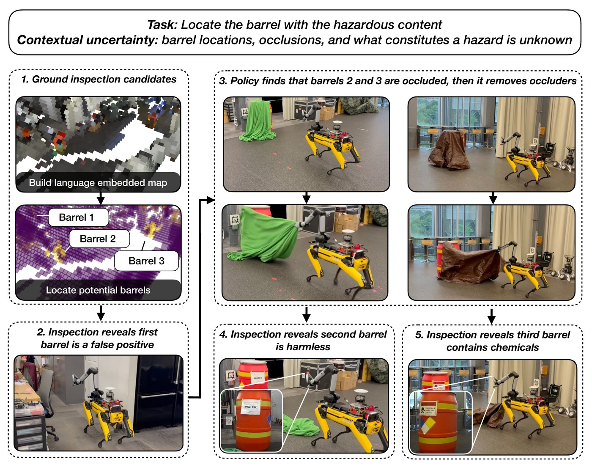
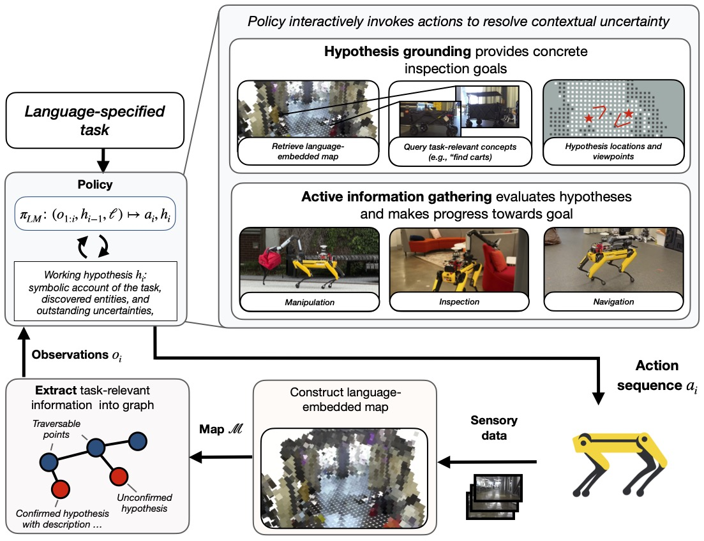
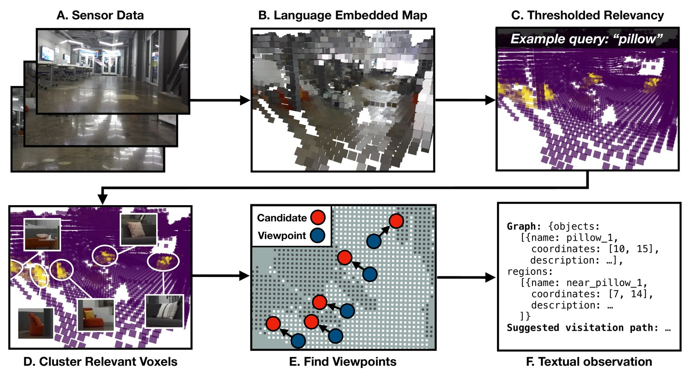
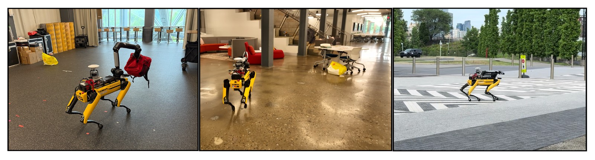
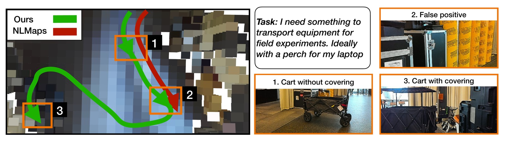
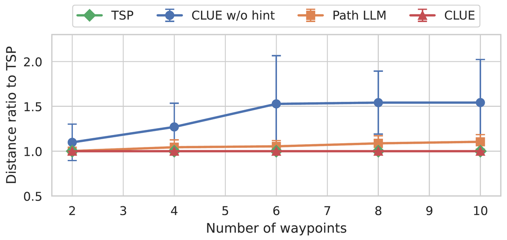

Webpage adapted from nerfies.
Foundation models provide robots with the ability to interpret natural language and reason about environmental context, yet most language-conditioned policies assume that goals are well-specified and that task-relevant information is provided upfront via a prior map. Operating in unfamiliar environments with underspecified tasks entails high contextual uncertainty—the robot must jointly infer what constitutes task success, what constitutes relevant information, and where (or whether) that information exists. We address these limitations via CLUE (Closed-Loop contextual Uncertainty rEsolution), a framework for actively resolving contextual uncertainty given underspecified tasks in natural language. CLUE uses an LLM-derived policy to hypothesize task-relevant concepts and potential plans. It then uses a language-embedded map, which is constructed online, to ground these hypotheses into actions. The policy sequentially evaluates hypotheses via closed-loop environment interaction and refines its plans as it gathers new information. We deploy CLUE on a Boston Dynamics Spot across three real indoor and outdoor environments spanning 15 tasks that require object disambiguation, functional inference, and occlusion reasoning. CLUE achieves a success rate within 7 percentage points of an oracle policy and outperforms an LLM-enabled planner without closed-loop feedback by a 4x margin. Supporting experiments demonstrate that simply building and then querying a language-enriched map is insufficient to resolve complex contextual planning tasks; these approaches achieve roughly one third the success rate of CLUE while requiring over 10x more VLM tokens.
Consider a robot placed in an unfamiliar area and tasked to “locate the barrel with the hazardous content.” Resolving this specification requires addressing several coupled forms of uncertainty, which we refer to as contextual uncertainty:
Resolving these amounts to maintaining a belief jointly over the goal conditions, the state, and the feasible action set, updated as observations arrive. Because that belief is intractable to maintain exactly in an open-vocabulary setting, CLUE approximates it with a symbolic hypothesis state: a running account of what has been confirmed, what has been hypothesized but not verified, what has been ruled out, and which uncertainties remain.

Example task. The robot must identify a hazardous barrel, but it does not know barrel locations or what constitutes a hazard a priori. It uses a language-embedded map constructed from RGB-D data to identify possible barrel locations. It rules out one as a false positive upon inspection. The other two candidates are barrels but are occluded by tarps. The robot removes the tarps, reads the signs hidden underneath, and finds the third barrel contains dangerous chemicals.
CLUE uses an LLM to realize underspecified language tasks in a closed-loop manner via two action types—hypothesis grounding and active information gathering. The LLM then constructs actions comprising manipulation, inspection, and navigation to resolve contextual uncertainties and make task progress. Information from the physical world is provided to the LLM via a symbolic graph-based observation space.
CLUE maintains two levels of abstraction. The language-embedded map is a dense voxel map whose feature embeddings are accumulated online from RGB-D imagery and can be queried for semantic relevance; it serves as perceptual memory. The observation graph is a sparse symbolic abstraction over that map, comprising object and region nodes annotated with coordinates and natural-language attributes, which is what the policy actually reads. A node's description evolves over an episode: a barrel may begin as “candidate location from language-embedded map,” become “occluded by tarp,” and end as “sign indicates barrel contains water.”

CLUE architecture. CLUE uses an LLM as a policy to realize underspecified language tasks in a closed-loop manner via two action types—hypothesis grounding and active information gathering. The LLM then constructs actions comprising manipulation, inspection, and navigation to resolve contextual uncertainties and make task progress. Information from the physical world is provided to the LLM via a symbolic graph-based observation space.
Grounding turns a hypothesis into concrete planning objectives. The policy identifies a task-relevant concept and queries the map: the concept is encoded into a feature vector, cosine similarity is computed against every voxel, and the score is normalized with a softmax over background concepts (e.g. “object,” “ground,” “wall”) to yield an interpretable confidence. Retained voxels are clustered with DBSCAN into candidates, each with a centroid, size, and average confidence.
For each candidate above threshold, CLUE computes a viewpoint along the line between the robot's current pose and the target at a fixed viewing distance, snapped to the nearest unoccupied point in freespace. Candidates and viewpoints enter the observation graph as object and region nodes, accompanied by a minimum-distance inspection tour computed by solving a TSP over the candidates. That tour is a hint rather than a plan: it may omit necessary preconditions, such as navigating to a viewpoint or clearing an occlusion before inspection.
If the map's embeddings are not precise enough to ground a hypothesis—the task calls for a “red backpack” but only “bag” is identifiable—the policy may broaden its query and try again.

Hypothesis grounding. Sensory data is used to construct a language-embedded map. Given a concept from the policy's hypothesis, candidate entities are identified by finding high-relevancy voxels and clustering. Viewpoints from which the candidates may be observed are identified via the map's occupancy grid. These candidates and viewpoints form a graph which is provided to the policy via a textual observation along with a minimum distance visitation order.
We evaluate on fifteen tasks across two indoor environments and the outside of an office park, providing experimental areas of roughly 100 m², 250 m², and 1,000 m². Nine tasks are run in the laboratory environment, three on a floor of the office building, and three outdoors. Each task is evaluated once.

Evaluation environments. Two indoor settings and one outdoor setting.
We compare against two baselines. An oracle receives step-by-step instructions on how to solve the task but otherwise shares CLUE's action space, estimating an upper bound on performance. NLMaps has access to the same language-embedded map and action space but assumes map queries are noiseless, so it must generate an open-loop plan; it measures the importance of closed-loop feedback.
CLUE reaches an 86.7% success rate, within 7 percentage points of the oracle's 93.3%, and over four times NLMaps' 20%.
| Success | ||||||||||
|---|---|---|---|---|---|---|---|---|---|---|
| Method | Dis. | Func. | Occl. | Overall | Actions | Time (s) | LLM Calls | LLM Tok. (k) | VLM Calls | VLM Tok. (k) |
| Oracle | 83.3% | 100.0% | 100.0% | 93.3% | 4.3±1.0 | 175.4±62.0 | 4.4±1.2 | 2.3±8.0 | 1.1±0.5 | 0.9±0.4 |
| CLUE (ours) | 83.3% | 100.0% | 66.7% | 86.7% | 8.1±4.9 | 222.9±120.6 | 6.3±3.6 | 5.7±5.2 | 2.9±2.1 | 2.1±1.7 |
| NLMaps | 16.7% | 33.3% | 0.0% | 20.0% | 4.3±1.2 | 115.2±58.4 | 3.4±0.8 | 1.2±4.6 | 0.9±0.6 | 0.5±0.3 |
Scroll the table sideways to see all columns.
Mean and standard deviation across fifteen real-world experiments, with success broken down by task type: object disambiguation (Dis.), functional inference (Func.), and occlusion reasoning (Occl.).
CLUE's resource usage is higher than the oracle's: 1.3x the time with nearly 2x the actions, 1.4x the LLM calls with 2.5x the LLM tokens, and 2.6x the VLM calls with 2.3x the VLM tokens. This is the cost of resolving false positives and distractors in the map, which the oracle avoids because it receives ground truth instructions.
CLUE's two failure modes were contextual inference and behavior execution. In one case, given “I need something to carry my robot outside,” the policy suggested a packing box rather than a cart. In another, the robot failed to grasp a task-relevant object. NLMaps failed primarily on false positives in its initial map query: assuming that result was correct, it had no mechanism to recover, and simply stopped on reaching one. That is also why its resource usage is comparatively low.

Qualitative results. Our method sequentially inspects candidates derived from the map, reasoning about functional use until it arrives at a suitable object. NLMaps only visits one candidate, which is a false positive.
We compare CLUE to DAAAM, a scene understanding framework that forgoes a dense language-embedded map in favor of an explicitly segmented scene graph, and that uses a VLM to caption objects and regions during map construction. Because DAAAM does not receive a prior task, those captions are descriptive but generic. We build a map from the sensory data collected during the experiments above, then provide DAAAM's agentic retrieval tool with the task specification, across the nine laboratory tasks.
| Success | ||||||||
|---|---|---|---|---|---|---|---|---|
| Method | Dis. | Func. | Occl. | Overall | LLM Calls | LLM Tok. (k) | VLM Calls | VLM Tok. (k) |
| CLUE (ours) | 66.7% | 100.0% | 66.7% | 77.8% | 5.2±3.1 | 4.2±4.4 | 1.9±1.3 | 1.4±1.2 |
| DAAAM | 33.3% | 33.3% | 0.0% | 22.2% | 2.1±0.6 | 3.4±0.7 | 5.4±0.5 | 17.1±2.4 |
Scroll the table sideways to see all columns.
Mean and standard deviation across nine real-world experiments in the laboratory environment.
DAAAM's failure modes were contextual imprecision, where the map lacked the information needed to disambiguate objects; false negative detections that prevented task-relevant object retrieval; and an inability to resolve occlusions. CLUE issues over twice as many LLM calls, since it repeatedly generates new plans, but requires only 1.2x as many LLM tokens—DAAAM's agent needs the entire scene graph, which is far larger than CLUE's symbolic observation space. Because DAAAM captions every observed object rather than only contextually relevant ones, it uses over 2.8x the VLM calls and 12x the VLM tokens.
We assess the value of the TSP-generated hint by comparing CLUE against an ablation that does not receive one, an LLM prompted directly to produce a distance-efficient path, and the TSP solution itself. Each method plans over waypoints randomly sampled from a 10×10 grid, corresponding to candidates from the grounding process.

LLM ability to plan distance-efficient paths (mean and std.)
The path-prompted LLM rivals the TSP. Without a TSP hint, however, our policy's LLM produces significantly longer paths—over 1.5 times as long for six or more points. This degradation is likely due to the system instructions focusing the LLM's attention on making contextual associations rather than producing distance-efficient paths. Future work is required to develop generation structures that enable both reasoning and efficient path assignment.
The mapping framework extends RayFronts with the RadSeg feature encoder. We use SciPy's DBSCAN
implementation and a TSP solver built on Gurobi. The policy and its VLM are implemented with GPT-5.1 using
“low” reasoning. The policy instantiates six behaviors:
goto(), inspect(), grasp(), place(),
query(), and answer().
All experiments run on a Boston Dynamics Spot equipped with a forward-facing ZED 2i camera for RGB and depth sensing and an NVIDIA Jetson AGX Thor for compute, with odometry from internal state estimation. Mobility relies on Nav2 for trajectory planning and the Spot's internal controller for velocity tracking; grasping and placement use the Spot SDK. GPT-5.1 is queried over a network connection, and all other processes run onboard.
@article{ravichandran_contextual_uncertainty,
title={Actively Resolving Contextual Uncertainty for Underspecified Tasks in Natural Language},
author={Zachary Ravichandran and Jonathan Diller and Fernando Cladera and Varun Murali and George J. Pappas and Vijay Kumar},
year={2026},
journal={International Symposium on Robotics Research (ISRR)},
eprint={2609.30428},
archivePrefix={arXiv},
primaryClass={cs.RO}
}